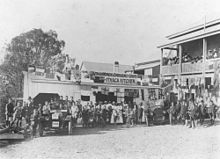
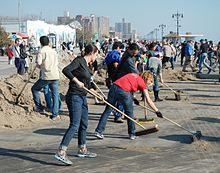

Volunteering
Volunteering is generally considered an altruistic activity where an individual or group provides services for no financial or social gain "to benefit another person, group or organization".[1] Volunteering is also renowned for skill development and is often intended to promote goodness or to improve human quality of life. Volunteering may have positive benefits for the volunteer as well as for the person or community served.[2] It is also intended to make contacts for possible employment. Many volunteers are specifically trained in the areas they work, such as medicine, education, or emergency rescue. Others serve on an as-needed basis, such as in response to a natural disaster.
In a military context a volunteer is someone who joins an armed force of their own volition rather than being conscripted, and is usually paid.
|

Volunteers from around the world came to Ithaca, |

Volunteers sweep the boardwalk in Brooklyn |
Content:
- Etymology and history
- Types
- Volunteer days, weeks and years
- Video: [TED talks] Mark Bezos: A life lesson from a volunteer firefighter
Types
- Volunteering as utilized by service learning programs
- Skills-based volunteering
- Volunteering in developing countries
- Virtual volunteering
- Micro-volunteering
- Environmental volunteering
- Volunteering in an emergency
- Volunteering in schools
- Corporate volunteering
- Community volunteer work
- Benefits of community volunteer work
- Social volunteering or welfare volunteering
- Volunteering at Major Sporting Events
- 2017 FIFA Confederations Cup and 2018 FIFA World Cup in Russia
- Legacy of 2018 FIFA World Cup Volunteer Program: Russian National Competition of Important Social Projects
Volunteer days, weeks and years
- Global Youth Service Day
- International Volunteer Day
- International Year of Volunteers
- Join Hands Day
- Mandela Day
- MLK Day of service
- Mitzvah Day
- Random Acts of Kindness Day
- Sewa Day
- Make A Difference Day
- World Kindness Day